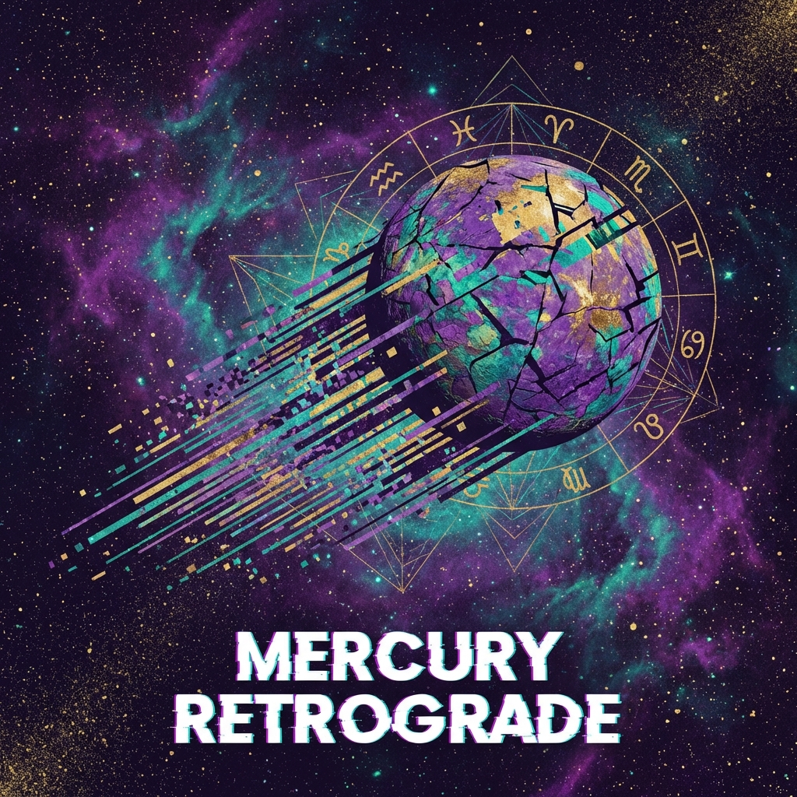

Astroloji dünyasının en popüler ve belki de en korkulan terimlerinden biri "Merkür Retrosu"dur. Peki, gökyüzündeki bir gezegenin "geri gitmesi" hayatımızı gerçekten altüst edebilir mi? Yoksa bu sadece bir optik illüzyon mu?
Retro (Gerileme) Nedir?
Öncelikle bilimsel bir gerçeği netleştirelim: Hiçbir gezegen fiziksel olarak yörüngesinde geri gitmez. Dünya'dan bakıldığında, gezegenlerin yörünge hızlarının farkından dolayı, bazen bir gezegen gökyüzünde durmuş ve ters yöne gidiyormuş gibi görünür. İşte buna "Retro" hareketi denir.
Merkür Neleri Yönetir?
Merkür; iletişim, teknoloji, seyahat, zeka, ticaret ve sözleşmeleri yöneten gezegendir. Retro döneminde bu alanlarda enerjinin içe döndüğü, yavaşladığı veya karışıklıkların yaşandığı düşünülür.
Merkür Retrosunda Neler Olabilir?
- İletişim Kazaları: Yanlış anlaşılmalar, gönderilmeyen e-postalar, yanlış kişiye atılan mesajlar.
- Teknolojik Arızalar: Bilgisayar çökmeleri, telefon bozulmaları, veri kayıpları.
- Seyahat Aksaklıkları: Rötar, bavul kaybı, rezervasyon hataları.
- Eski Dostlar: Geçmişten gelen eski sevgililer veya arkadaşlar bu dönemde "Merhaba" diyebilir.
Ne Yapmalı, Ne Yapmamalı?
Bu dönemi bir kriz değil, bir fırsat olarak görün. "Re-" ön ekiyle başlayan her şeyi yapmak için harikadır:
- Yapın: Revize edin (gözden geçirin), Restore edin (onarın), Reorganize edin (düzenleyin), Reflect (düşünün/iç gözlem yapın). Yarım kalan işleri bitirin.
- Yapmayın: Yeni ve büyük sözleşmelere imza atmak, aniden evlenmek, hiç denemediğiniz büyük bir elektronik alet almak riskli olabilir. Eğer mecbursanız, her şeyi iki kez kontrol edin.
Sonuç
Merkür Retrosu korkulacak bir şey değil, evrenin bize "Biraz yavaşla, arkana bak ve eksiklerini tamamla" deme şeklidir. Bu dönemi içsel büyüme ve düzenleme için kullanırsanız, retro bittiğinde çok daha güçlü bir şekilde ilerleyebilirsiniz.